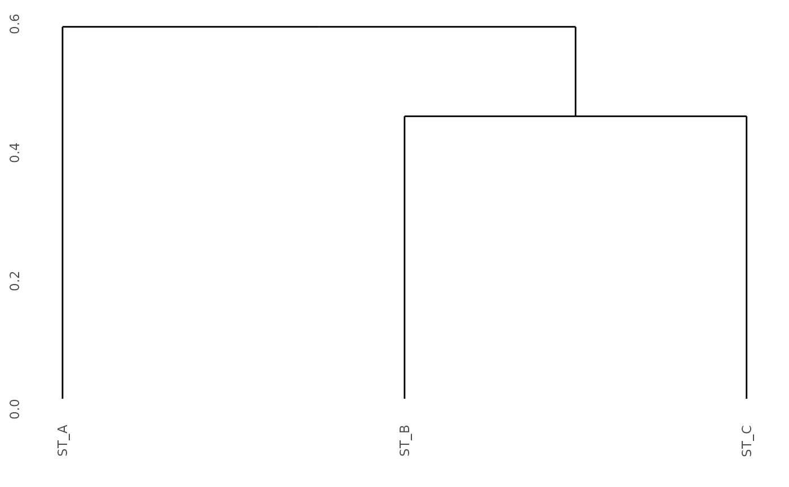
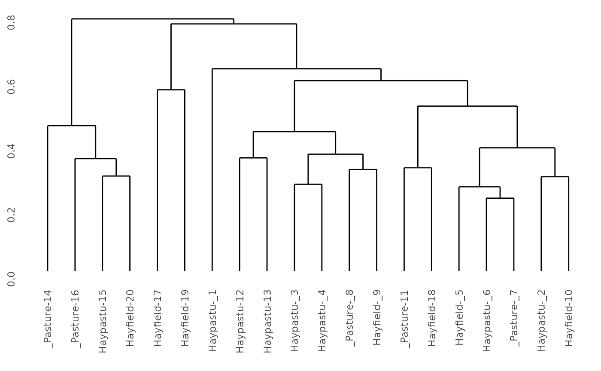

Helper function for clustering methods
Helper function for calculate distance
Add group names to hclust labels.
Add colors to dendrogram
Usage
cluster(x, c_method, d_method)
distance(x, d_method)
cls_add_group(cls, df, indiv, group, pad = TRUE)
cls_color(cls, df, indiv, group)Arguments
- x
A community data matrix. rownames: stands. colnames: species.
- c_method
A string of clustering method. "ward.D", "ward.D2", "single", "complete", "average" (= UPGMA), "mcquitty" (= WPGMA), "median" (= WPGMC), "centroid" (= UPGMC), or "diana".
- d_method
A string of distance method. "correlation", "manhattan", "euclidean", "canberra", "clark", "bray", "kulczynski", "jaccard", "gower", "altGower", "morisita", "horn", "mountford", "raup", "binomial", "chao", "cao", "mahalanobis", "chisq", "chord", "aitchison", or "robust.aitchison".
- cls
A result of cluster or dendrogram.
- df
A data.frame to be added into ord scores
- indiv, group
A string to specify individual and group name of column in df.
- pad
A logical to specify padding strings.
Value
cluster() returns result of clustering. $clustering_method: c_method $distance_method: d_method
distance() returns distance matrix.
Examples
# \donttest{
library(dplyr)
#>
#> Attaching package: ‘dplyr’
#> The following objects are masked from ‘package:stats’:
#>
#> filter, lag
#> The following objects are masked from ‘package:base’:
#>
#> intersect, setdiff, setequal, union
df <-
tibble::tibble(
stand = paste0("ST_", c("A", "A", "A", "B", "B", "C", "C", "C", "C")),
species = paste0("sp_", c("a", "e", "d", "e", "b", "e", "d", "b", "a")),
abundance = c(3, 3, 1, 9, 5, 4, 3, 3, 1))
cls <-
df2table(df) %>%
cluster(c_method = "average", d_method = "bray")
library(ggdendro)
# show standard cluster
ggdendro::ggdendrogram(cls)

# show cluster with group
data(dune, package = "vegan")
data(dune.env, package = "vegan")
cls <-
cluster(dune, c_method = "average", d_method = "bray")
df <- tibble::rownames_to_column(dune.env, "stand")
cls <- cls_add_group(cls, df, indiv = "stand", group = "Use")
#> Joining with `by = join_by(stand)`
ggdendro::ggdendrogram(cls)

# }